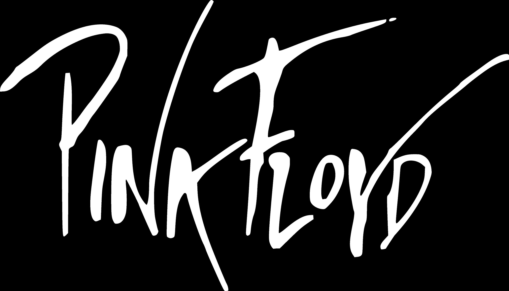
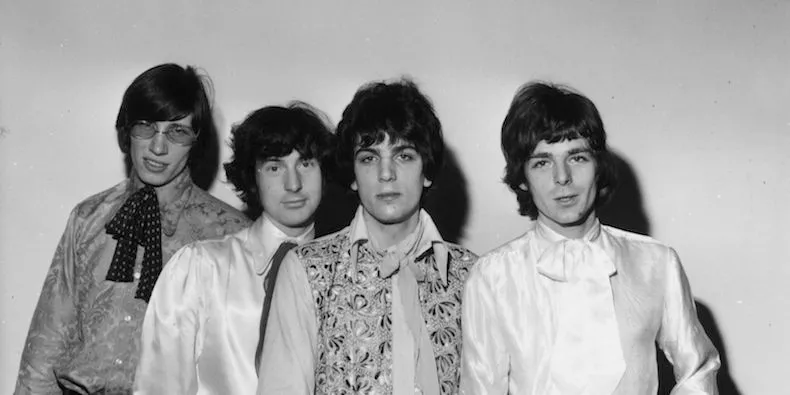
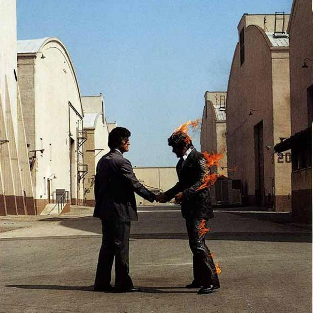
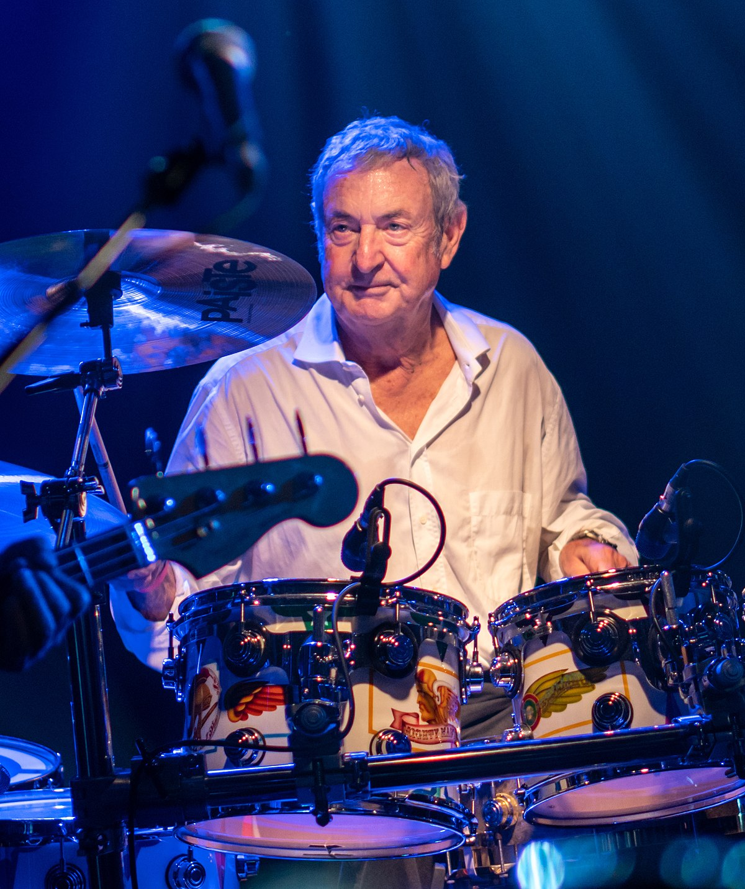
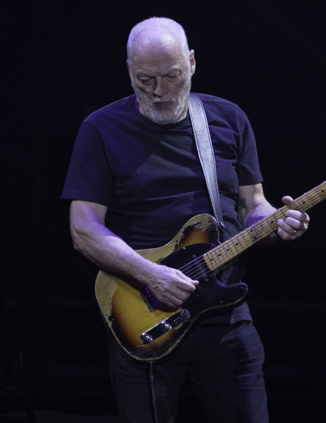
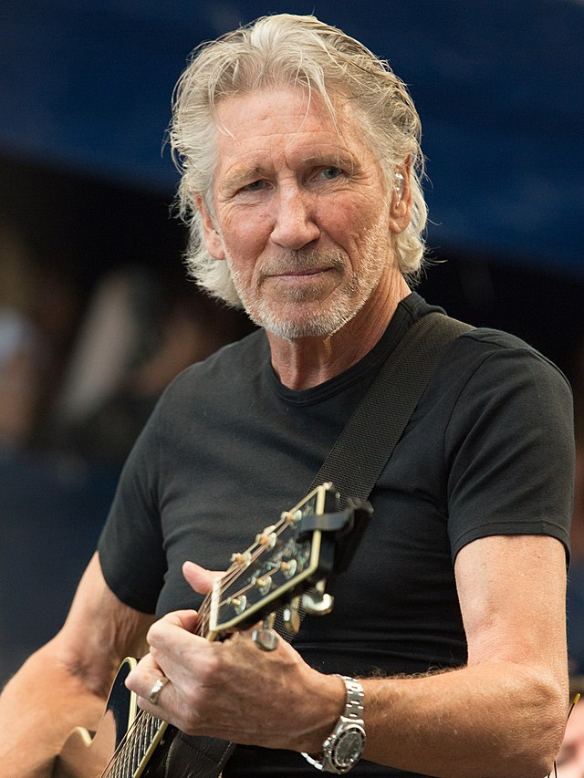
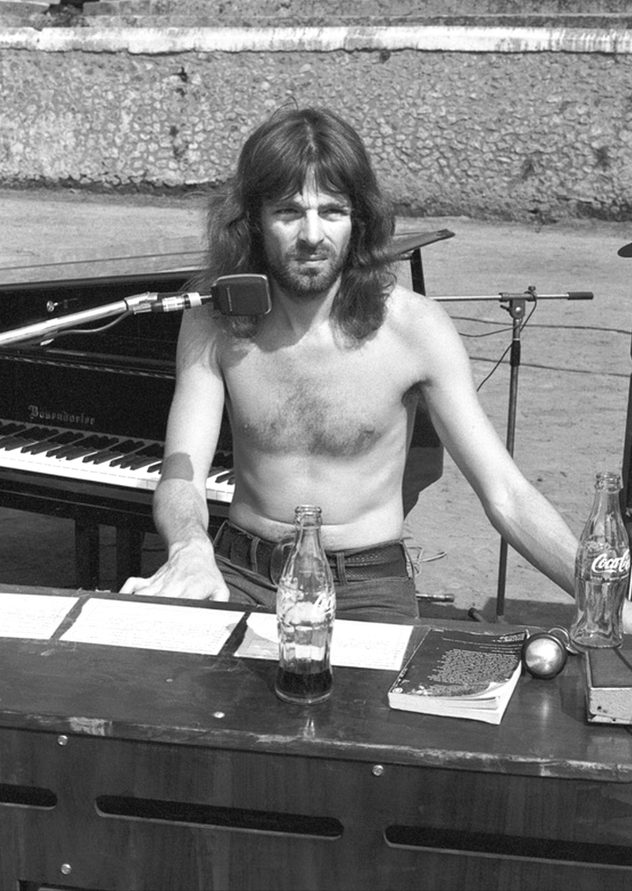

ABOUT US
We are an English rock band formed in London in 1965. Gaining an early following as one of the first British psychedelic groups, we were distinguished by our extended compositions, sonic experimentation, philosophical lyrics and elaborate live shows. We became a leading band of the progressive rock genre, cited by some as the greatest progressive rock band of all time.
Pink Floyd were founded in 1965 by Syd Barrett (guitar, lead vocals), Nick Mason (drums), Roger Waters (bass guitar, vocals) and Richard Wright (keyboards, vocals). Under Barrett's leadership, they released two hit singles, "Arnold Layne" and "See Emily Play", and the successful debut album The Piper at the Gates of Dawn (1967). Guitarist and vocalist David Gilmour joined in January 1968; Barrett left in April 1968 due to deteriorating mental health. Waters became the primary lyricist and thematic leader, devising the concepts behind Pink Floyd's most successful albums, The Dark Side of the Moon (1973), Wish You Were Here (1975), Animals (1977) and The Wall (1979). The musical film based on The Wall, Pink Floyd – The Wall (1982), won two BAFTA Awards. Pink Floyd also composed several film scores.
Following personal tensions, Wright left Pink Floyd in 1981, followed by Waters in 1985. Gilmour and Mason continued as Pink Floyd, rejoined later by Wright. They produced the albums A Momentary Lapse of Reason (1987) and The Division Bell (1994), backed by major tours, before entering a long hiatus. In 2005, all but Barrett reunited for a performance at the global awareness event Live 8. Barrett died in 2006, and Wright in 2008. The last Pink Floyd studio album, The Endless River (2014), was based on unreleased material from the Division Bell recording sessions. In 2022, Gilmour and Mason reformed Pink Floyd to release the song "Hey, Hey, Rise Up!" in protest at the Russian invasion of Ukraine.
By 2013, Pink Floyd had sold more than 250 million records worldwide, making them one of the best-selling music artists of all time. The Dark Side of the Moon and The Wall were inducted into the Grammy Hall of Fame,[1] and these albums and Wish You Were Here are among the best-selling albums of all time. Four Pink Floyd albums topped the US Billboard 200, and five topped the UK Albums Chart. Pink Floyd's hit singles include "Arnold Layne" (1967), "See Emily Play" (1967), "Money" (1973), "Another Brick in the Wall, Part 2" (1979), "Not Now John" (1983), "On the Turning Away" (1987) and "High Hopes" (1994). They were inducted into the US Rock and Roll Hall of Fame in 1996 and the UK Music Hall of Fame in 2005. In 2008, Pink Floyd were awarded the Polar Music Prize in Sweden for their contribution to modern music.
MEMBERS
Nick Mason
David Glimour
Syd Barrett
Roger Waters
Richard Wright
Conserts
|
Tickets can be bought on our official site